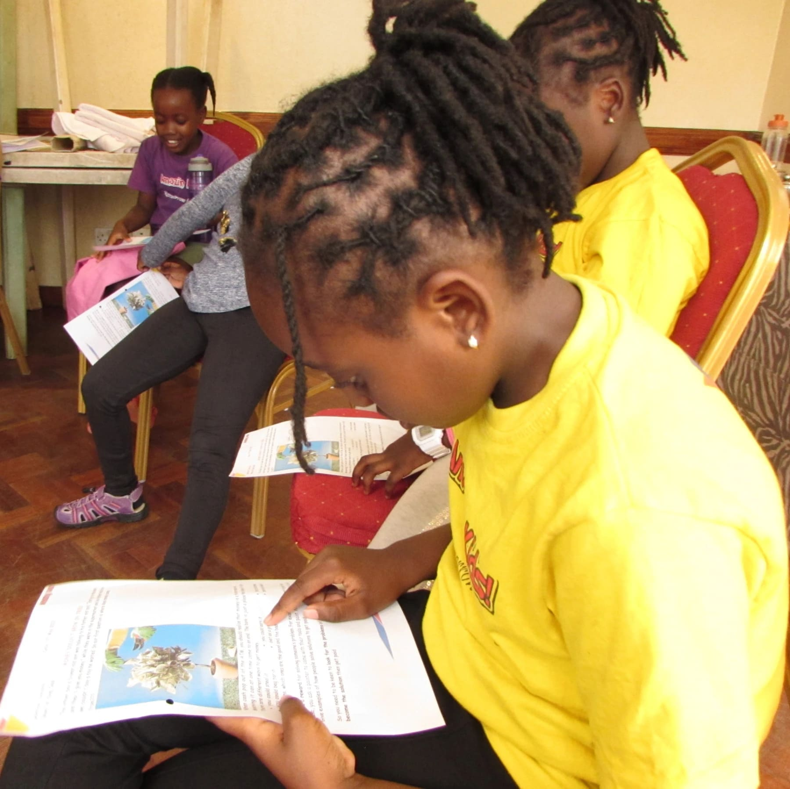

After a 3 weeks April holiday break, the Amazing Kids Club finally resumed on the 7th of May. Grab on your seat belts and let us take you through the day.
We dove straight into some indoor games, and it was so much fun! It felt as if we had never taken a break for the holidays at all, as guys were all in sync. See!
We started with a Pass the Message game
Then decided to sit down for the What Did You Hear game
Followed by a game we'd like to call Chinese Burger.
And finally Police And Robber Game.
By the time we were done with the games, everyone had finally arrived and so that meant it was time to gather around, pray then share how our holiday was.
Afterwards, we did some early morning warm up exercises and a little bit of dance.
We took a few minutes to refresh ourselves on the dance moves we had been learning throughout the season.
Just when we thought it couldn't get any more fun, the teacher taught us a new game called Police, Killer, Doctor and The Villagers. Here as you can see the game demanded us to be creative, skeptical and analytical in certain situations.
Time for the life-skill was on. The lesson for the day was on Money Doesn't Grow on Trees. We learnt about the value of money and that money is earned through working.
We then headed to the field to have some play-time with our friends and the teachers.
Then had some delicious snacks and tea afterwards during our tea break.
At the start of our art session, the teacher took us through the guidelines of the project.
And then paired us into groups where we went ahead to accomplish our goals for the session through creativity and teamwork.
Here are some pictures of us being goofy and proud of ourselves for having finished step 1 of our project.
And to end our day, we had this amazing girl wow us with her amazing voice!